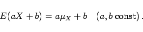

Inhalt Index DeskTop Bronstein

 Wahrscheinlichkeitsrechnung und Mathematische Statistik Wahrscheinlichkeitsrechnung Zufallsgrößen, Verteilungsfunktionen Erwartungswert und Streuung, Tschebyscheffsche Ungleichung
Wahrscheinlichkeitsrechnung und Mathematische Statistik Wahrscheinlichkeitsrechnung Zufallsgrößen, Verteilungsfunktionen Erwartungswert und Streuung, Tschebyscheffsche Ungleichung


Wenn g(X) eine Funktion der Zufallsveränderlichen X ist, so ist auch g(X) eine Zufallsveränderliche. Als ihr Erwartungswert oder Mittelwert wird definiert:
so daß wegen (16.49a,b) unter anderem auch gilt
|  | (16.50b) |